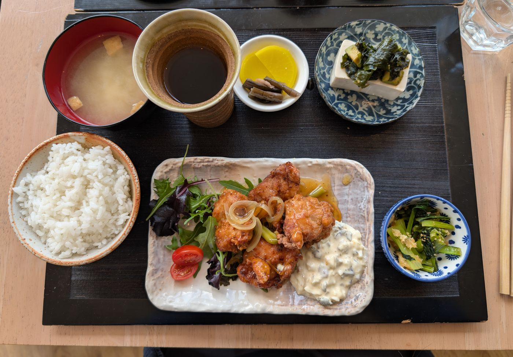
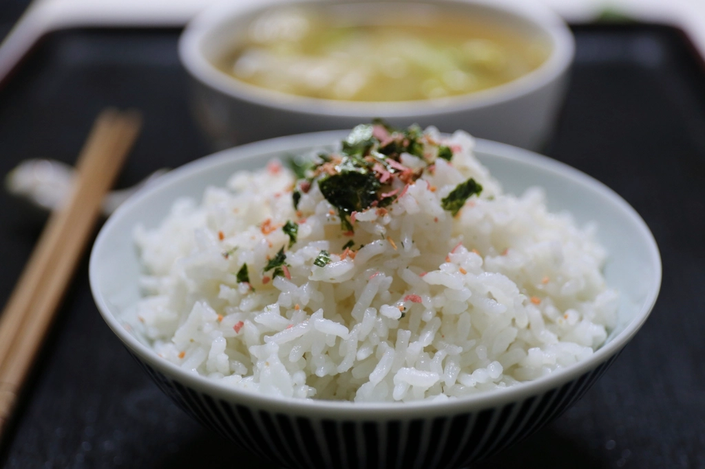
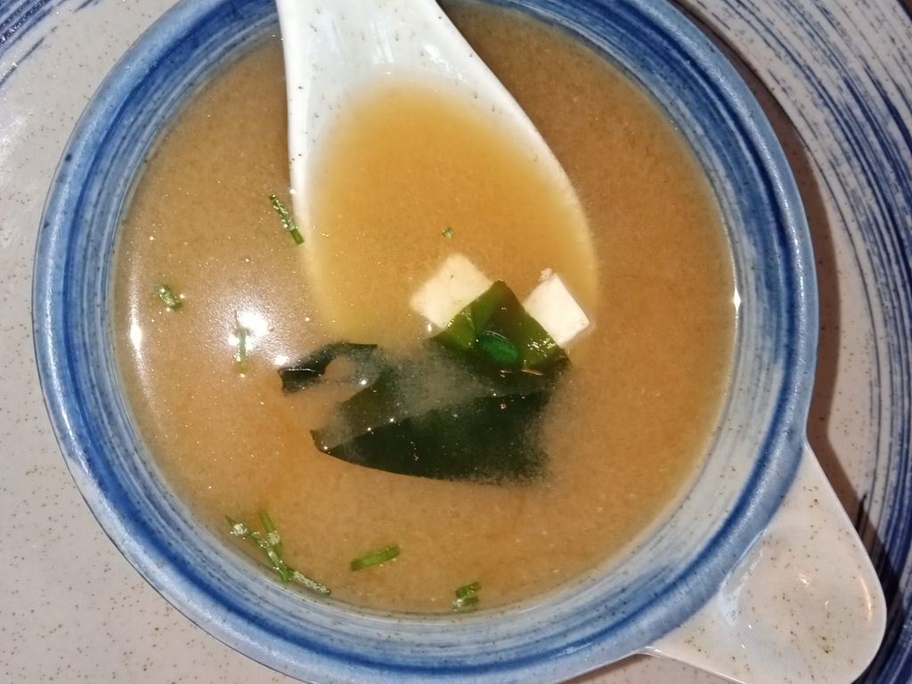

Gozen
品数で魅せる、御膳のごはん
一皿に並ぶ品数の多さと、魚沼産コシヒカリのごはん。塩沢の食事処が大切にしている、御膳のかたちです。

Photo: イメージ（フリー素材）油淋鶏御膳
当店で人気の御膳です。揚げたての油淋鶏は皮がパリッと香ばしく、中はジューシー。そこに、一品一品丁寧に仕込まれたおばんざいの小鉢、具材の食感まで楽しめる味噌汁、魚沼産コシヒカリのごはんが並びます。見た目にも品数が多く、食べ応えのある一膳です。

Photo: イメージ（フリー素材）豚しゃぶ／つくねバーグ
油淋鶏御膳のほかに、豚しゃぶやつくねバーグといったメインメニューもご用意しています。日によって登場するメニューが異なり、数量限定でご提供しているため、時間帯によっては売り切れとなる場合がございます。お目当てのメニューがある場合は、少し早めのご来店がおすすめです。
メニューによっては数量限定・早めに売り切れる場合がございます。

Photo: イメージ（フリー素材）おばんざい・小鉢・味噌汁
御膳に添えられる小鉢のおばんざいは、一つひとつ手をかけて作られています。味噌汁もえのき茸などの具材の食感が活きた、優しい味わいです。メインの一皿だけでなく、脇を固める小鉢や汁物まで丁寧に仕上げることを大切にしています。
入口横の雑貨コーナー
店の入口横では、雑貨も取り扱っています。詳しい取り扱い品については、店頭にてご確認ください。